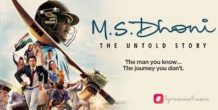

MOVIE : M.S DHONI

Release date :
30 September 2016
Directed by :
Neeraj Pandey
Main characters :
Sushant Singh Rajput
Disha Patani
Kiara Advani
Anupam Kher
Bhumika Chawla
Running time :
190 minutes
IMDB rating :
8/10
Information of the movie :
M.S. Dhoni: The Untold Story is a 2016 Indian Hindi-language biographical sports drama film directed and
co-written by Neeraj Pandey. It is based on the life of former Test, ODI and T20I captain of the Indian
national cricket team, Mahendra Singh Dhoni. The film stars the late Sushant Singh Rajput as MS Dhoni, along
with Disha Patani, Kiara Advani, and Anupam Kher. The film chronicles the life of Dhoni from a young age
through a series of life events.
The idea of the biopic was put forward by Dhoni's manager, Arun Pandey, after encountering an incident at an
airport after the 2011 Cricket World Cup Final. Development began two years later, with the consent of
Dhoni. Neeraj Pandey was later approached to helm the film while he was working on Baby. Pandey recruited a
number of people for researching into Dhoni's background and his life events. Dhoni eventually became a
consultant on the film.